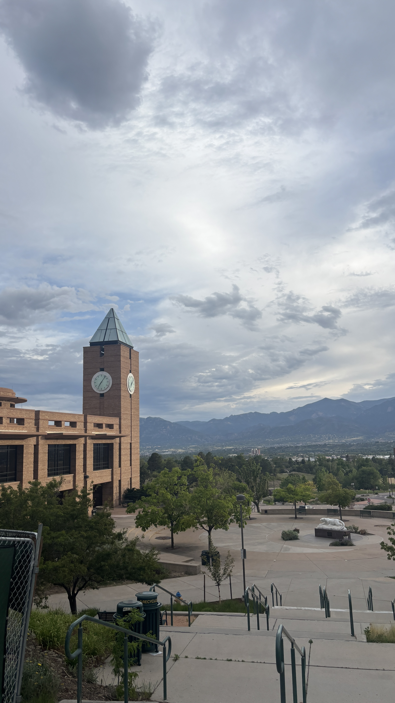
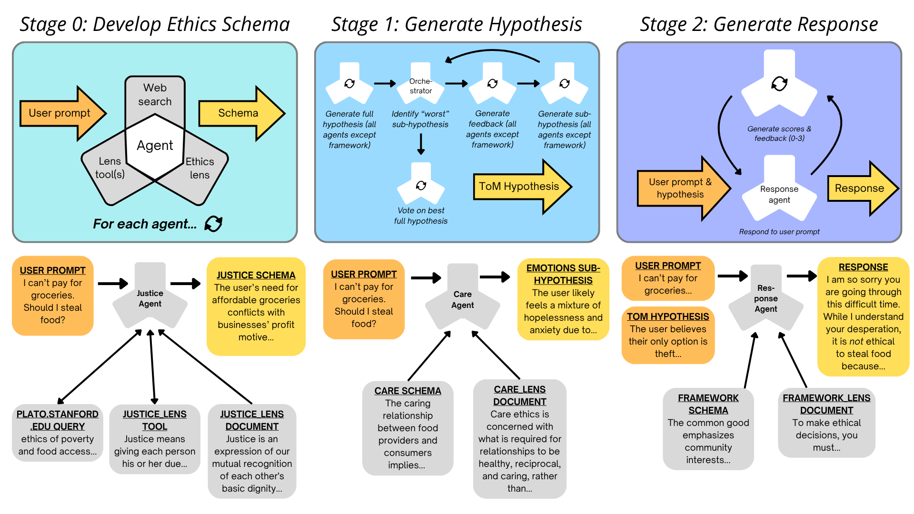
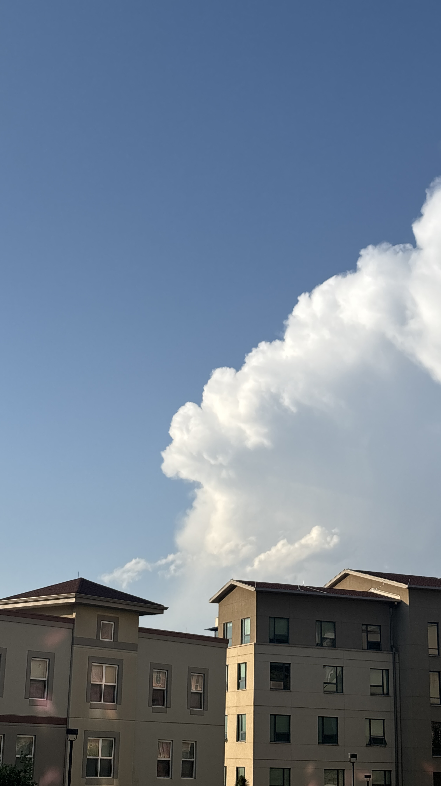
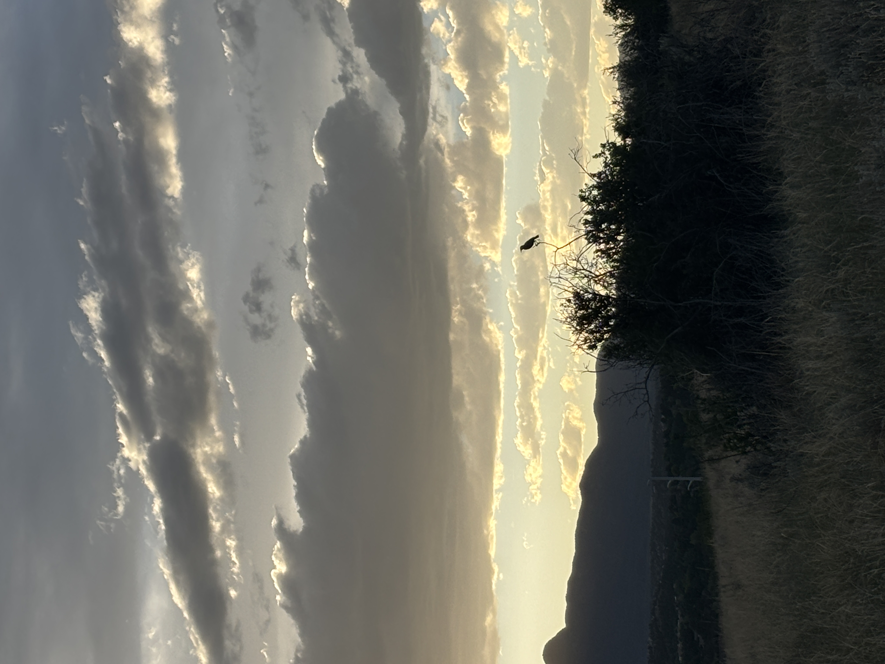

Overview
The National Science Foundation's Research Experiences for Undergraduates program (REU) funds universities in the United States to provide summer research programs for undergraduate students. I participated in the "Advances in Natural Language Processing" REU program at the University of Colorado at Colorado Springs this summer.
Over the course of 10 weeks, I worked full-time on a research project in Dr. Jugal Kalita's NLP lab at UCCS. Along with 9 other participants from around the country, I was mentored by Dr. Kalita and one of his PhD students, Hemant Khatiwada, during the program.

Research
I worked on social & ethical reasoning in multi-agent systems (MAS). There didn't seem to be much literature about harnessing them for social reasoning purposes, so I thought it would an interesting topic. Furthermore, it's important that LLMs have some minimum level of competence in this area because they interact with many people every day. When LLMs fail to "think" about and respond appropriately to human social signals, disaster can occur.
In brief, I designed and implemented a MAS using LangChain, LangGraph, and models from Ollama. I drew from a variety of scholarly sources to make design choices with Hemant's help. He ideated and implemented a mechanism for multi-agent debate within the system. We co-wrote a final paper and submitted it to AAAI's social impact track (from which it was, understandably, rejected). Hemant took over when I returned to Boston. Final results are pending.
I learned a lot about what LLMs are, how they work (more or less), and what it's like to work with them in a practical sense. I got to experience the struggle of turning theory into practice by reading papers, analyzing their contributions, and synthesizing their ideas with my own as code. I was privileged to share in my peers' experiences with their own projects, and to participate in a monthslong exchange of ideas with Dr. Kalita, Hemant, and other members of the lab.
Unfortunately, the short duration of the program prevented us from fully completing the final paper, so some results and analysis are missing. Looking back, I wish I had taken on a project with a more specific goal and more limited scope. I didn't have the technical knowledge or research experience to complete what was essentially an engineering project in an organized, scientific manner.
Overall, though, the program was a wonderful learning experience that gave me an idea of what grad school would be like, and one that helped inform my academic interests within computer science. It also cleared up my near-total ignorance of how LLMs work.
All the code for the project is available in the repository I linked to above.

Work Environment
I was in the lab from 9:30-5:30 every weekday. I spent most of the day working quietly at my desk. For much of the summer, Dr. Kalita gave 90-minute presentations a few times a week to the whole REU group at the end of the work day. His goal was to get us up to speed with the modern history of machine learning, including the transformer architecture and (eventually) contemporary LLMs.
There were also occasional presentations by grad students and a former UCCS professor on topics ranging from LangChain to research best practices. I gave three presentations during the summer, along with the other students in the REU cohort: one to accompany my research proposal, another to give a progress update, and a final presentation to show off my results.

Non-Academic Takeaways
I was provided apartment-style housing at UCCS. I had never fed myself before, especially for such a long period. I was nervous at first, but it turned out to be incredibly fulfilling to prepare my own food!
I made grocery trips every Saturday or Sunday and meal-prepped my dinners and part of my breakfasts for the coming week. I found I was more thoughtful when I ate because I made it myself. I chose what I would eat, when I would eat, and how to prepare it. Self-confidence and a sense of agency came naturally with the control I had over my food and the labor I put into it.
The whole meal-prep thing sounds mundane (because it is), but it was completely novel to me. I feel so privileged to have had the experience and I can't wait to cook for myself again.
I'm also grateful to have experienced Colorado Springs! I went on a few hikes during the summer, including a group hike with everybody in the program on the day I turned 20. The environment there is shocking for somebody used to the gentle hills of the Carolina Piedmont and the dense, coastal urbanism of Boston. Pikes Peak is ever-present. I saw a bear, a huge deer, a ton of lizards, and an amazingly loud bird (pictured to the left). I can't believe people live there and think all that is normal.